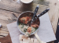

<footer>
  <div class="footer-box">
    <div class="flex footer-sect J_sb">
      <div class="footer-info">
        <h3>Кулинарное лобби</h3>
        <p>Блюда, которые нужно попробовать, а лучше — приготовить и попробовать хотя бы раз в жизни. Гастрономические сокровища, составляющие основу национальных кухонь. Лучшие рецепты со всего света</p>
      </div>
      <div class="footer-post">
        <h3>Последнии посты</h3>
        <ul>
          <li class="flex footer-single-post">
            
            <div class="flex flex_d_c J_sb footer-post-info">
              <h4>Круассан с томлеными
                говяжьими щеками!</h4>
              <time>4 апр 2019</time>
            </div>

          </li>
          <li class="flex footer-single-post">
            
            <div class="flex flex_d_c J_sb footer-post-info">
              <h4>Круассан с томлеными
                говяжьими щеками!</h4>
              <time>4 апр 2019</time>
            </div>
          </li>
        </ul>
      </div>
      <div class="footer-tag">
        <h3>Облако тэгов</h3>
        <ul class="flex f_w ">
          <li>Мясо</li>
          <li>Выпечка</li>
          <li>Закуски</li>
          <li>Салаты</li>
          <li>Коктели</li>
          <li>Cупы</li>
          <li>Основные блюда</li>
          <li>Закуски</li>
          <li>Коктели</li>
          <li>Закуски</li>
        </ul>
      </div>
      <div class="flex flex_d_c footer-inst">
        <h3>Instagram</h3>
        <div class="flex flex_d_c J_sb footer-box-inst">
          <div class="flex J_sb">
            
            
            
          </div>
          <div class="flex J_sb">
            
            
            
          </div>
        </div>
      </div>
    </div>
    <div class="flex footer-bag J_sb">
      <nav class="footer-nav">
        <ul class="flex">
          <li>Гланая</li>
          <li>Рецепты</li>
          <li>Ингридиенты</li>
          <li>Авторы</li>
          <li>Личный кабинет</li>
        </ul>
      </nav>
      <div class="footer-copyright">
        <p>«КУЛИНАРНОЕ ЛОББИ» ©2020. ВСЕ ПРАВА ЗАЩИЩЕНЫ.</p>
      </div>
    </div>
  </div>
</footer>
